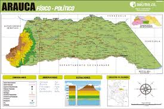

Arauca

Zonas Turisticas
- Parque Nacional Natural El Cocuy
Ideal para senderismo y montañismo, con paisajes espectaculares.
- Sierra Nevada del Cocuy
Montañas nevadas perfectas para el ecoturismo.
- Puente Internacional José Antonio Páez
Conecta Colombia y Venezuela con vistas panorámicas.
- Esteros de los Llanos
Excelente para avistamiento de fauna silvestre..
- Catedral Santa Bárbara
Patrimonio arquitectónico e histórico.
- Avistamiento de Aves
Gran biodiversidad para los amantes de la naturaleza.
Comida Tipica
- Mamona
Carne de res asada al estilo llanero.
- Pisillo de pescado o chigüiro
Carne desmechada con sofrito.
- Hallacas
Similar al tamal, envuelto en hoja de plátano.
- Sancocho llanero
Sopa con carne, plátano y yuca.
- Queso llanero
Blanco, salado y semiduro
Sector Economico
- Petróleo
Principal motor económico, con importantes yacimientos explotados por empresas nacionales e internacionales.
- Ganadería
Cría de ganado bovino, base de la economía rural y de la cultura llaner
- Agricultura
Producción de arroz, plátano, yuca, maíz y cacao
- Pesca
Pesca artesanal en los ríos de la región, con especies como cachama y bagre.
- Comercio y turismo
Comercio binacional con Venezuela y creciente interés en ecoturismo y cultura llanera.